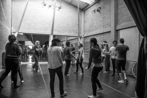

The Hideout has been trying to get Patti Stiles in Austin for the Improv Marathon for years. Now that we’ve got her for the 48-hour marathon, we’re sneaking in a workshop on the Wednesday before. Come learn from one of the best (and a true Keith Johnstone protege).

Creative Impulse and Narrative Intuition
with Patti Stiles
Wednesday, June 21, 7-10pm (3 hours)
There are many different approaches in how to build a scene or create a narrative, this workshop is based on Keith Johnstone techniques. Some techniques are taught as rules creating a check list mentality in the improviser. For example the rule “always start with the who, what, where.” This has the potential to dull the creative impulse as one begins to repeat a trained behavior. We search for the check list information and we miss other offers and possibilities and we aim to do the task correctly. This application of a technique as a rule shrinks the possibility to discover the unknown which intern ends up creating scenes, stories, characters and gags we’ve seen a million times before, just dressed up differently. The improviser goes into a impro auto pilot. Improvisers should not rely on rules but be taught an awareness and understanding of how things work, so that they can explore, challenge and create. Instead of learning a series of trained responses (say yes to everything) we need to develop our creative impulses and a broader understanding of acceptance of the offers that develop the story. What are we saying “yes” to? This means also strengthening our narrative intuition by being aware of all offers (verbal, physical, emotional, environmental, etc.) and what is the story (platform, circle of possibilities, whose story is it, tilt, change and endings). Having a firm grasp of these tools allows improvisers to keep the work fresh, inspire themselves and their partners and never feel backed into a corner with a scene offer they find offensive, aggressive or unsafe.
Bio:
Patti Stiles has worked all over the world, in countries including Canada, the US, Italy, Holland, Switzerland, Germany, Belgium and Thailand. She is the Artistic Director if Die Nasty AU, co-director of Secret Impro theatre and has been Artistic Director of both Rapid Fire Theatre and Impro Melbourne. She was the first woman to improvise for 53 hours non-stop in the famous Die Nasty Soap-a-thon and has had a workshop room named after her at Impro ACT in Canberra. She is currently the Oceania representative on the Theatresports Institute Managing Board.
$40 / 3 hours / Limited Space / **Class held at the Hideout Theatre (617 Congress Ave)